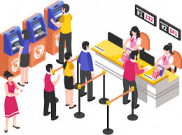

Queue management systems in the public sector

There is an ongoing digital transformation in the public sector where more and more government offices implement a modern and digital queue management solution. The Covid-19 pandemic has increased the speed of this transformation and many government offices have looked for a solution that also ensures a safe customer journey and staff work environment. A Queue Management System can enable a safe queueing experience while providing service providers with conditions to deliver high-quality services and improve customers' satisfaction.
Queue management systems in hospitals

Everyday healthcare facilities get visited by generally worried patients, stressed, and sometimes even in pain. If you want to improve the patient experience, you need to create a comfortable environment.
Queue management systems in retail
Retail customers shop online, on mobile, and in-store. As customers' expectations increase, you, as a retailer, need to create a seamless and flawless customer journey.
By implementing a Queue Management System, you can get the insights to understand, anticipate, and meet the customer's expectations.